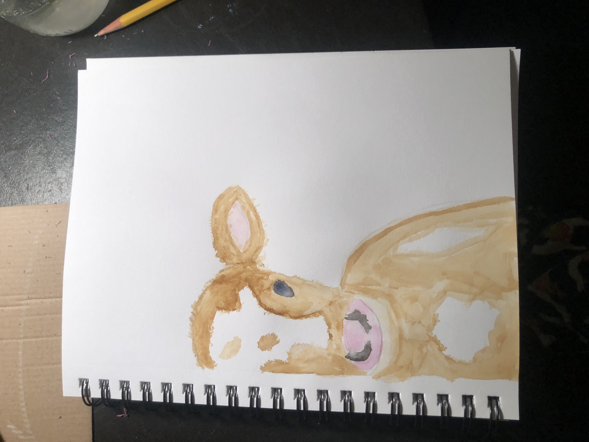
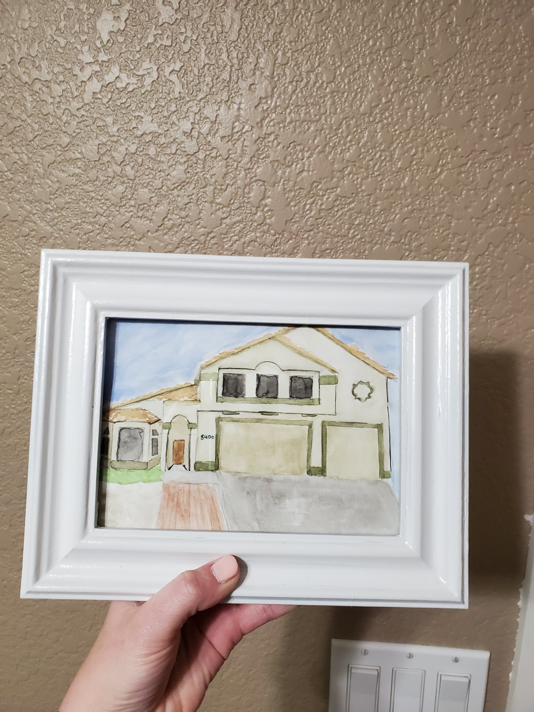
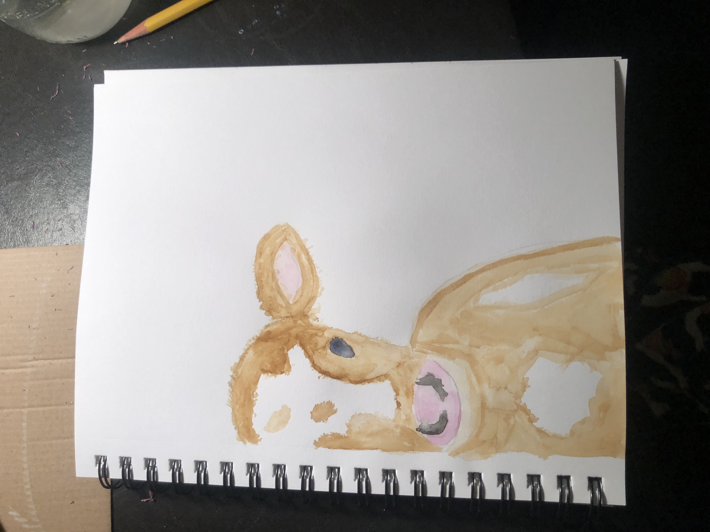
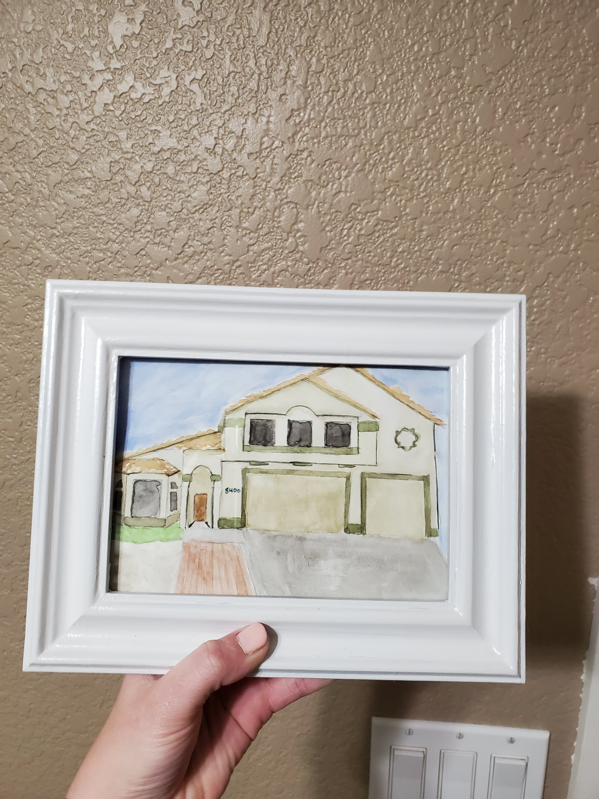

Water Coloring
At the start of Covid, I decided I should try a new hobby to get through the isolation. I started watercoloring. As I watched YouTube videos and practiced, I slowly got better. Here's how you can get started too!
- Get the following supplies:
- Multi-Media sketchbook
- Watercolor paint brushes
- Winsor & Newton watercolor tubes
- Cup of water
- Brainstorm and gather inspiration of what you want to paint.
You can use these resources to get ideas:- Your own photos
- YouTube
- Try different techniques like:
- wet on dry
- wet on wet
- dry brush
- layering
- splattering
- Practice, Practice, Practice!
- The more you paint, the better you become
- Remember to have fun with it!
Here are some of my beginner art pieces:
 



Here's a video that can help get you started
Art in America
I believe that art should be taught in every school. It's very important to the development of children and their learning.
Below are visuals of the arts education in America.

back to the top